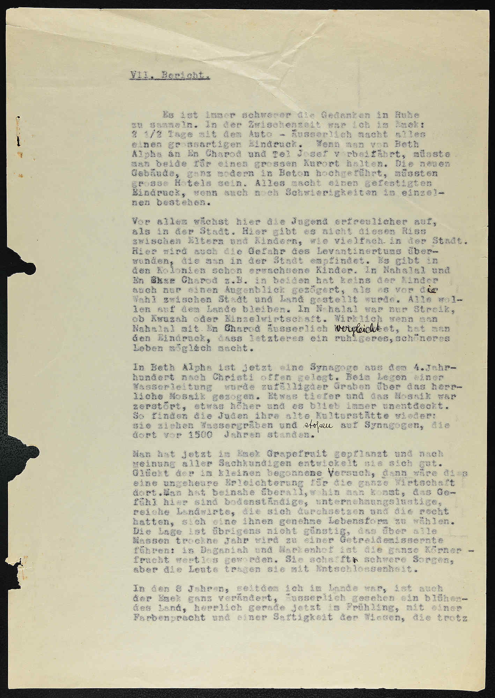

1932 · Zionistische Vereinigung für Deutschland · pre-aliyah inspection
Es ist immer schwerer die Gedanken in Ruhe zu sammeln. […] Wenn man von Beth Alpha an En Charod und Tel Josef vorbeifährt, müsste man beides für einen grossen Kurort halten. Die neuen Gebäude, ganz modern in Beton hochgeführt, müssten grosse Hotels sein. Alles macht einen gefestigten Eindruck, wenn auch noch Schwierigkeiten im einzelnen bestehen.
Vor allem wächst hier die Jugend erfreulicher auf, als in der Stadt. Hier gibt es nicht diesen Riss zwischen Eltern und Kindern, wie vielfach in der Stadt. Damit wird auch die Gefahr des Levantinertums überwunden, die man in der Stadt empfindet.
In Beth Alpha ist jetzt eine Synagoge aus dem 4. Jahrhundert nach Christi offen gelegt. […] So finden die Juden ihre alte Kultstätte wieder: sie ziehen Wassergräben und stossen auf Synagogen, die dort vor 1500 Jahren standen.
In den 8 Jahren, seitdem ich im Land [war], ist auch die Ene ganz verändert, äusserlich gesehen ein blühendes Land, herrlich gerade jetzt im Frühling […].
ביקור בעמק, עין חרוד ותל יוסף עושים רושם של מקומות הבראה גדולים. בקיבוץ הנוער גדל עם שמחה יותר מאשר בעיר, הקשר עם ההורים טוב בעוד בעיר קיים לעיתים קרע בין הילדים להורים. בקיבוץ אין מרגישים את המציאות הרלוונטית שמרגישים בעיר. ילדי הקיבוץ רוצים להמשיך ולחיות במסגרת זאת ולא לחיות בעיר. בנהלל ההתלבטות היחידה שלהם היא אם להמשיך כקבוצה או כיחיד.
בעמק נטעו אשכוליות ולדעת המומחים ההצלחה טובה, דבר שיקל על הפרנסה. בעמק מתרשמים, שחיים שם חקלאים מצליחים ומאושרים. השנה השחונה משפיעה על יבול הדגנים, בדגניה לגרגירי התבואה לא היה שום ערך.
בפורים, 3 ימים של חגיגות בתל אביב — המולה גדולה. כ-15,000 אורחים הגיעו לעיר. […] באחת הפינות הוצגו כל ה"המנים" של כל הזמנים — והאחרון מביניהם — היטלר.
